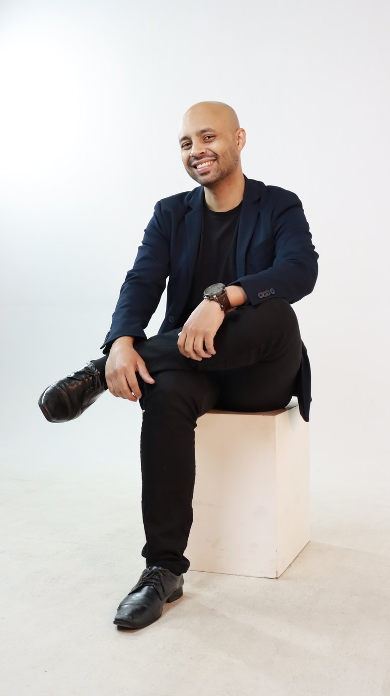
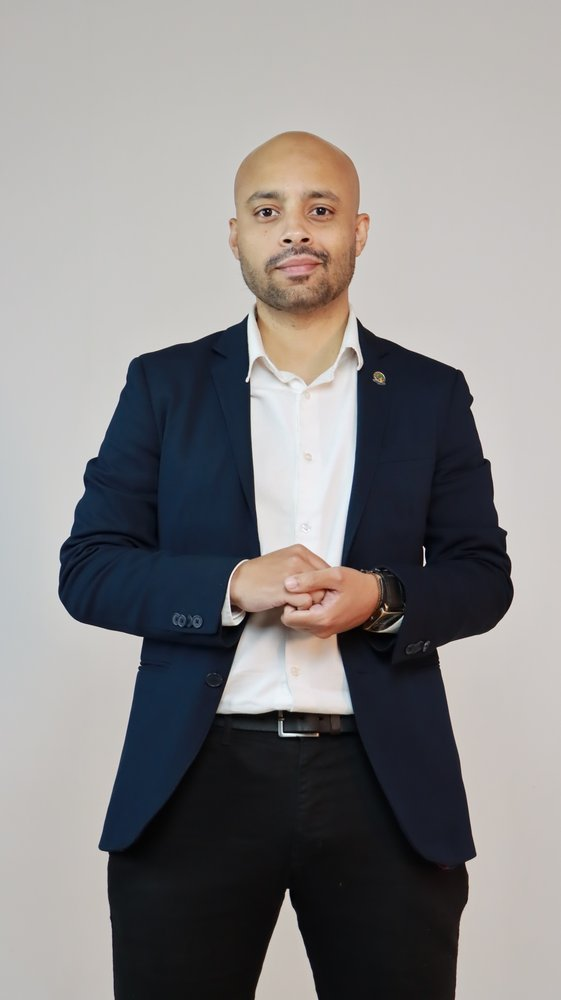

Olá! Sou o Wanderson — economista, perito judicial e consultor.
Disponível para novos projetos · 2026Atuo como economista, perito judicial e consultor — apoiando pessoas, empresas e o sistema de Justiça a tomarem decisões mais seguras em ambientes de incerteza.

Cada vertical fala uma linguagem diferente — pessoa física precisa de clareza, empresa precisa de eficiência, Justiça precisa de imparcialidade técnica. Eu atendo as três, com o mesmo rigor analítico.
Consultoria individual e familiar com sigilo absoluto. Organização de orçamento, quitação inteligente de dívidas e construção de objetivos financeiros com método.
Estruturação financeira de pequenas e médias empresas, do dia a dia operacional à decisão estratégica.
Atuação como perito judicial em processos do TJSP, TJES e TJMG — laudos técnicos, cálculos e pareceres com fundamentação metodológica clara.

Graduado em Ciências Econômicas pela Universidade Federal Fluminense (UFF), com especializações em modelagem financeira (R2C), perícia judicial (SINDECON-SP) e perícia trabalhista (APEJESP). Certificado AAI pela ANCORD.
Trajetória executiva em finanças: Supervisão em indústria de importação, Gerência Financeira em indústria (com estruturação de FIDC e plano de recuperação) e Financial Advisor em boutique de investimentos.
Premiação acadêmica no CONFICT/UFF (2020) com pesquisa em Value at Risk aplicado ao mercado de seminovos.
Hoje atuo como perito judicial nos TJSP, TJES e TJMG, produzindo laudos técnicos em contratos bancários, revisional, apuração de haveres e superendividamento.
Há 2 anos sou Delegado do CORECON-SP em Jandira/SP, promovendo impacto local — incluindo o Observatório Econômico de Jandira, com indicadores municipais e análise territorial.
Em paralelo, presto consultoria financeira a empresas e pessoas, palestro no PMI-DF e no TEIA, e apresento o podcast Econotalks.
Sou fonte recorrente para a mídia em temas como mercado de trabalho, decisões macroeconômicas, crédito e seus impactos no dia a dia de empresas e pessoas. Já contribuí com:
Análise sobre o cenário do mercado de trabalho na região e os efeitos da retração de vagas qualificadas sobre famílias e renda.
Avaliação técnica sobre os efeitos da expansão do consignado para trabalhadores CLT e o real custo do crédito sobre o orçamento familiar.
Leitura técnica sobre o impacto de eventos geopolíticos no IPCA, na política monetária do Banco Central e no câmbio.
Conteúdo, ensino e impacto público são parte do que faço. Cada frente abaixo é um projeto vivo, com cadência própria.
Plataforma com indicadores municipais e análise territorial — desenvolvida pela equipe que coordeno como Delegado do CORECON-SP. Abre dados de mercado, emprego e desenvolvimento para empresas, instituições e cidadãos.
Podcast autoral de economia descomplicada com profundidade técnica. Duas temporadas gravadas, episódios sobre Nobel, capitalismo de dependência, terras raras, lavagem de dinheiro e pautas conjunturais. Disponível no Spotify, Apple Podcasts e YouTube.
Palestrante no PMI-DF (Brasília) sobre ESG e gestão de projetos, e no TEIA — espaço voltado a empreendedores. Temas recorrentes: leitura inteligente de números, decisão sob incerteza, economia comportamental e visão estratégica.
Treinamentos sob medida para times de empresas que querem desenvolver colaboradores em finanças, leitura de KPIs e tomada de decisão. Combinação de teoria, casos reais e dinâmicas práticas.
Entre consultoria autoral, atuação como consultor sênior em consultoria de gestão e projetos pelo Movimento Empresa Júnior (MEJ), passei por uma diversidade ampla de setores — o que me permite traduzir economia para a realidade de cada operação.
Escolha o canal que preferir. Costumo responder em até 24h úteis.